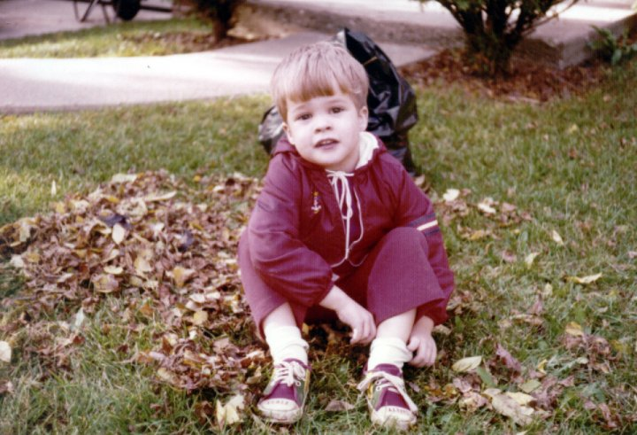
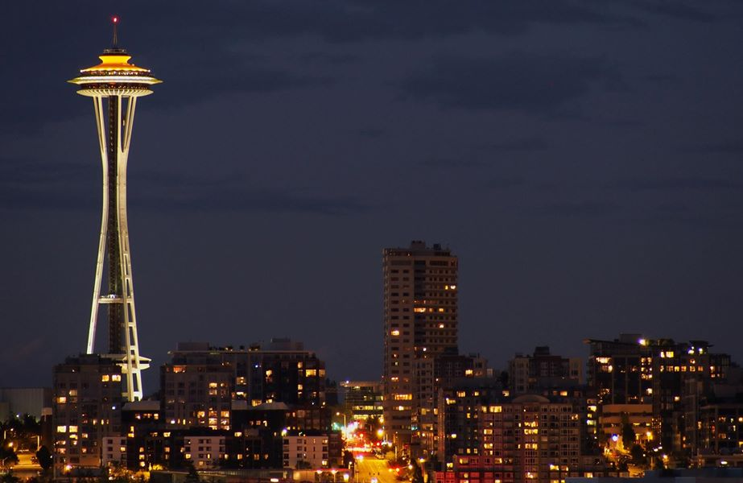
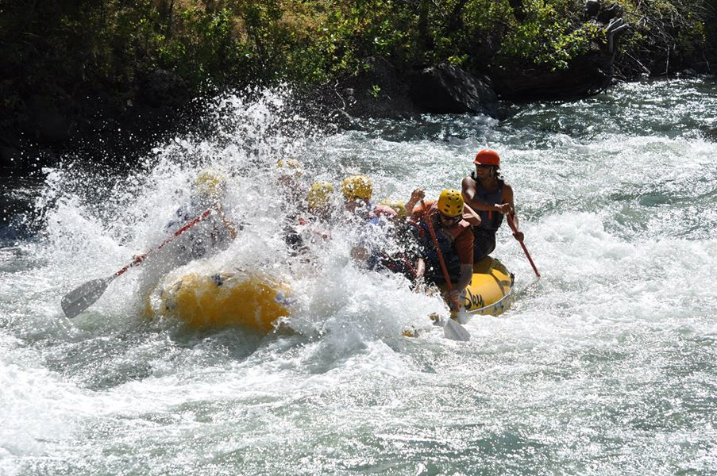
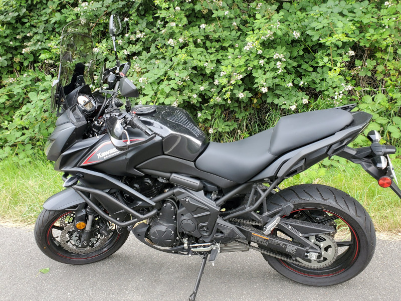
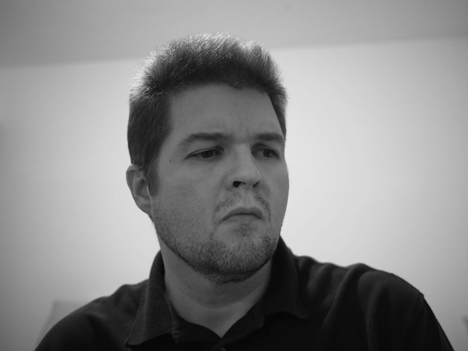

Hi! 👋🏼
I'm a software developer by trade, which I've been doing full time since 1993. I've lived and worked in many places in the United States, including Michigan (where I grew up), Massachusetts, Colorado, and Washington State where I reside now. I've visited all 50 states, and a dozen countries.
I've worked on some things you may have heard of, like ASP.NET MVC, Enterprise Library, and CodePlex. I've done startups and big companies, and tend to like smaller teams. I currently work at GitHub on internal developer tooling. I've also been involved in open source; I am the primary maintainer of xUnit.net, a unit testing framework for .NET developers (since 2007). I live stream on Twitch usually once a week, working on the next version of xUnit.net.
In my personal life, I am someone who consumes and occasionally produces music (mostly guitar, piano, and singing). I love playing games, especially board games, card games, and video games. I spend my outdoor time split between being on the water in a kayak or a raft, and on the road on my motorcycle.
Thanks for stopping by!
    